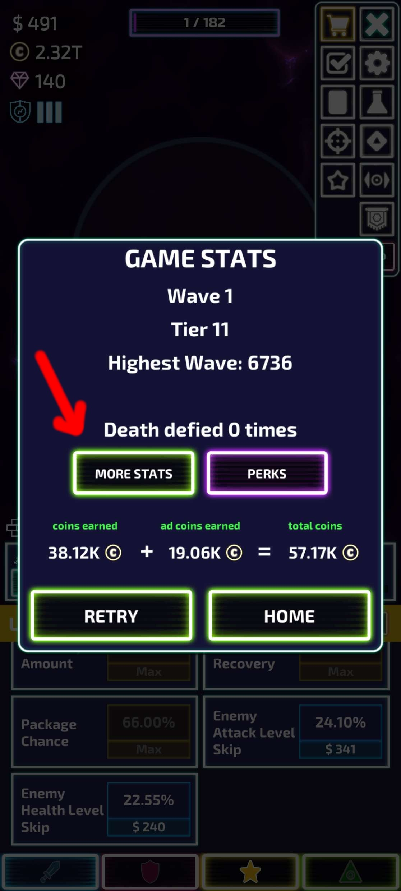
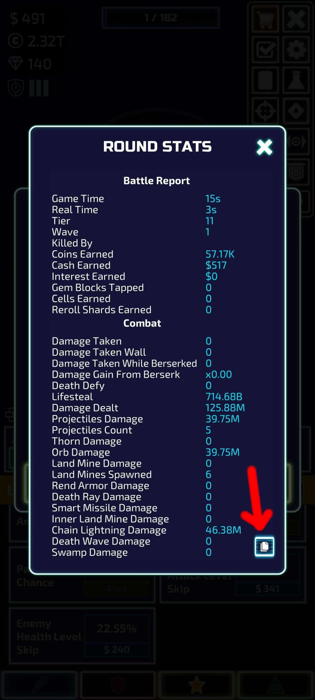

TowerTracker
❔
⚙
+
↻
ℹ
How to Copy Your Stats
At the end of a round, tap
MORE STATS
(see below):

Then tap the
clipboard icon
at the bottom right to copy your stats:

Paste the copied stats into TowerTracker using the
Insert Clipboard
button.
Note:
All your TowerTracker data is saved locally on this device and is
not (yet) transferable
to other devices.
Close